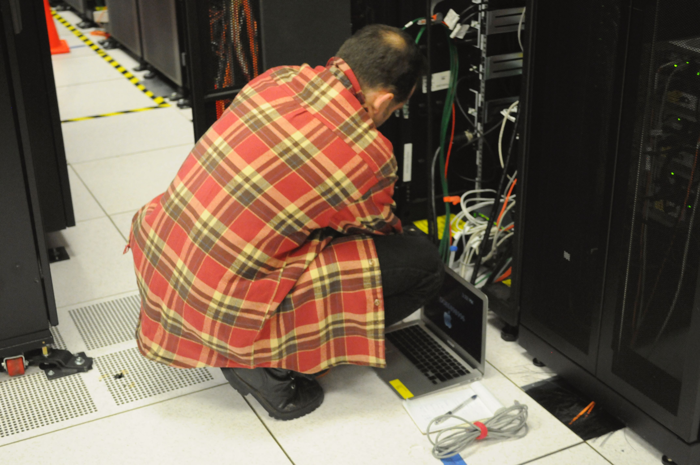
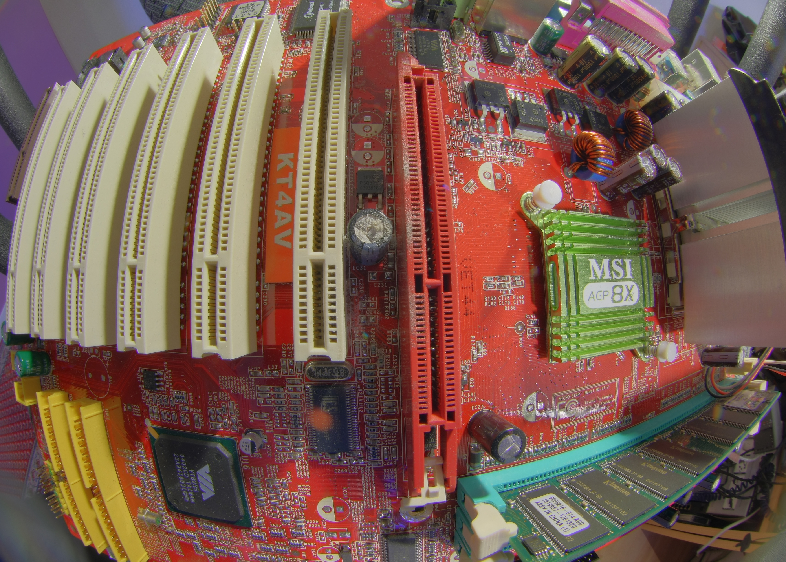

AI Agent Loops
How AI agents work — the reasoning loop, tool use, memory types, and multi-agent orchestration.
The Agent Loop — Step by Step
💬 User Input
"What's the weather in Paris?"
"What's the weather in Paris?"
↓
🧠 LLM Reasoning
Process prompt + context
Process prompt + context
↓
❓ Tool Call Needed?
↓ Yes
🔧 Execute Tool
web_search, calculator, API...
web_search, calculator, API...
↓
👁 Observe Result
Tool output added to context
Tool output added to context
↓
❓ Task Complete?
↓ Yes
✓ Final Response
Return answer to user
Return answer to user
Execution Log
Press Run to start the simulation.
The agent loop (also called ReAct or think-act-observe) is the core pattern behind all AI agents:
1. The LLM receives a task and its current context (conversation + tool results so far)
2. It either generates a final answer OR decides to call a tool
3. The tool executes and the result is appended to context
4. The loop repeats — the LLM reasons again with new information
5. When the LLM is satisfied, it produces a final response
1. The LLM receives a task and its current context (conversation + tool results so far)
2. It either generates a final answer OR decides to call a tool
3. The tool executes and the result is appended to context
4. The loop repeats — the LLM reasons again with new information
5. When the LLM is satisfied, it produces a final response
Tool Use Simulation
Message Thread
Available Tools
Tool calling allows LLMs to interact with the world beyond their training data. The model outputs a structured
tool_call JSON object, the runtime executes it, and the result is returned as a tool_result message. This lets agents browse the web, run code, read databases, send emails, and more.
Agent Memory Types
AI agents use different types of memory to store and retrieve information — from the immediate conversation to long-term persistent databases.
Memory retrieval flow
💬 User query
↓ retrieval triggered
👀 In-context (fast)
💾 External DB (slow)
🧠 Weights (instant)
↓ injected into context
✓ LLM generates response with retrieved knowledge
Memory is the key bottleneck in building capable agents. In-context memory is fast but limited by the context window. External memory (vector databases, SQL) is unlimited but requires retrieval. Model weights contain vast world knowledge but can't be updated at runtime without fine-tuning.
Multi-Agent Orchestration
A coordinator agent breaks down a task and routes subtasks to specialist agents. Watch message passing in real time.
Multi-agent systems decompose complex tasks: a coordinator (orchestrator) receives the high-level goal, breaks it into subtasks, and dispatches them to specialists. Each specialist has its own tools and expertise. Results flow back to the coordinator which synthesizes the final answer. This mirrors how large organizations work — management delegates to experts.
AI Compute Infrastructure
Behind every agent loop is a stack of physical hardware — GPUs, memory, interconnects, and power. Modern AI agents run on purpose-built data centers with thousands of accelerator chips working in parallel.
Data Center
Modern AI data centers house thousands of GPU/TPU nodes. Summit at ORNL delivers 200+ petaflops — the kind of scale needed to train and serve large language models.

Supercomputer
IBM Blue Gene/Q "Mira" at Argonne. Massively parallel architectures like this pioneered the distributed compute patterns that underpin large-scale model training.

Server Infrastructure
Dense server racks provide the memory bandwidth and storage I/O required for serving LLMs. Inference clusters handle millions of agent requests per day.

Robotic Agents
AI agents are not limited to software — robotic systems like this KUKA arm use agent loop principles: perceive, reason, act. Tool use in the physical world.

Silicon Foundation
Every LLM call ultimately executes on silicon — GPU dies packed with CUDA cores and SRAM. The physical substrate beneath the agent abstraction layer.